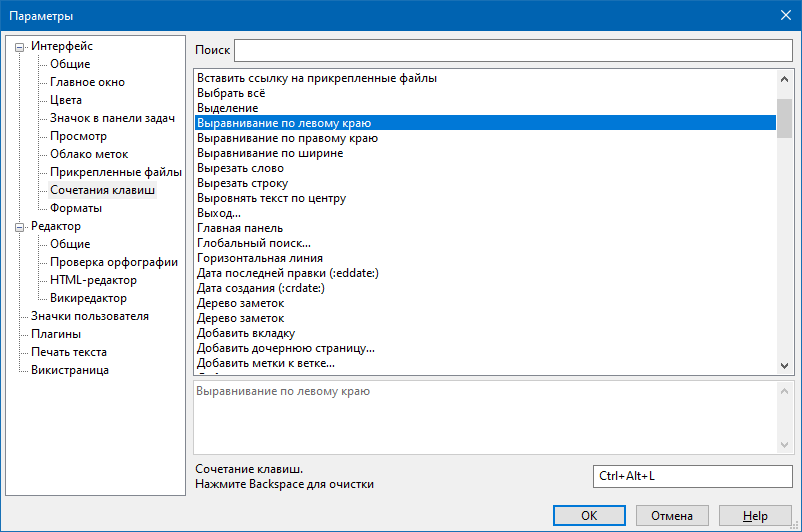

Интерфейс - Сочетания клавиш

В данном разделе можно поменять или установить горячие клавиши для вызова функций программы. В верхней части окна располагается список всех возможных действий, для которых можно установить горячие клавиши. Ниже располагаются элементы управления для установки горячей клавиши и более подробное описание действия.
Под списком действий, для которых можно установить горячую клавишу, располагается поле фильтра, с помощью которого можно быстро найти нужное действие, введя часть его названия.